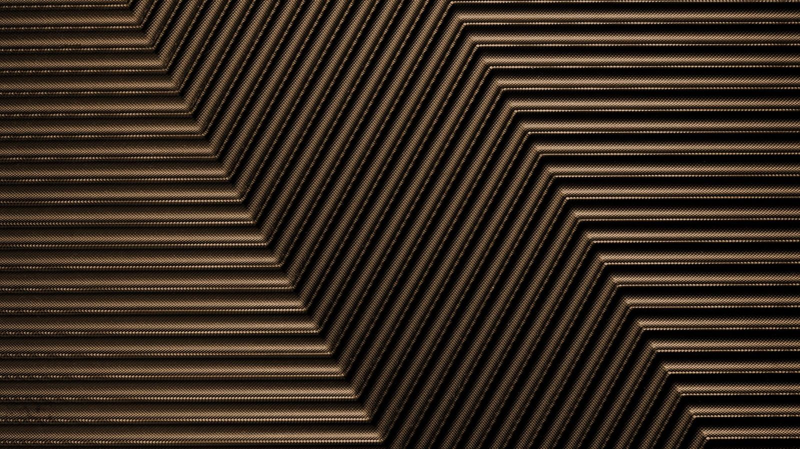

Paris · métiers du son
Un nid pour les métiers du son.
Se former, créer, se rencontrer : des fils tressés ensemble.
Tekonest se construit pas à pas. Rien n'est encore en vente : ce site dit clairement ce qui existe et ce qui se prépare.
Trois entrées
Par où entrer dans le nid ?
Chacune peut vivre seule. Ensemble, elles forment le réseau.
-
Pour les étudiantes et étudiants en son
Se former
Réussir le BTS Son avec la plateforme Apprendre, et s'entraîner à câbler du vrai matériel sur TekPractice.
En développement -
Pour les organisateurs, les lieux, les collectifs
Créer avec nous
Organiser, accompagner ou produire un projet, avec une équipe créative et technique.
En projet, pas encore proposé -
Pour les artistes et les techniciens
Rejoindre le réseau
Des projets créatifs payés correctement, des crédits, et une équipe sur qui compter.
Réseau en projet
Pourquoi un nid
Sept fils, sept métiers.
Un nid tient ensemble des brins très différents. Le nôtre a sept fils : les métiers que le réseau veut réunir et payer correctement. Ses motifs (cadres, médaillon, bandes incrustées) viennent de la marqueterie de Damas, faite de bois et de nacre.
Exemples de places, rien n'est encore ouvert. Comment le réseau va fonctionner
- Fil 1/7SonRégie façade et retours, enregistrement.
- Fil 2/7LumièreCréation et régie lumière.
- Fil 3/7ScènePlateau, backline, montage.
- Fil 4/7MusiqueArtistes, DJ, musiciennes et musiciens.
- Fil 5/7ImagePhoto, vidéo, VJing.
- Fil 6/7ProductionOrganisation, accueil, sécurité.
- Fil 7/7TransmissionFormer la relève, sur le terrain.
Où nous en sommes
Mis à jour le 22 octobre 2026.
| Branche | Pour qui | État | Prochaine étape proposée |
|---|---|---|---|
| Réseau | Artistes, techniciennes et techniciens | En projet | Écrire les principes de rémunération, puis une première liste. |
| Créer avec nous | Organisateurs et lieux | En projet, plus tard | Valider un modèle légal avec un juriste avant toute offre. |
| Apprendre | Étudiants en BTS Son | En développement | Vérifier le cours E3 et préparer les autres épreuves. |
| TekPractice | Étudiants en BTS Son | En développement | Remettre en ligne une version publique stable. |

Ce que vous pouvez faire aujourd'hui
Les inscriptions ne sont pas encore ouvertes. Vous pouvez déjà lire, comprendre et nous écrire.